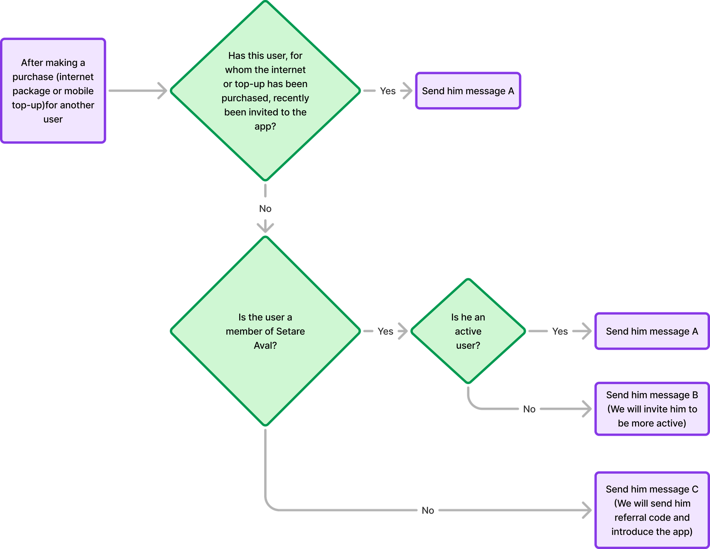

Case Study 03 · Product Design & Growth
From 4% to 47%: How I Turned a Failing Feature Into a Core Product Value
Despite millions of active users, only 4% of payments were bills. Session recordings showed users were trying but failing. I led the complete redesign from research through launch, increasing adoption to 47%.

Despite millions of active users, only 4% of payments were bills. Session recordings showed users were trying but failing.
- 96% of payments were not bills
- High drop-off rates at specific steps
- Users spending unusually long on single screens
- Many abandoned attempts before payment confirmation
"People pay bills every month—it's not optional. So why are they avoiding our app?"
Iran's largest fintech platform serving millions of users for everyday financial transactions.
The opportunity: Bill payment is a high-frequency, high-stress task that every household faces monthly. If we could solve it well, we'd become indispensable.
The problem: We had the feature, but almost nobody used it.
Multi-method research combining qualitative interviews, contextual inquiry, digital behavior analysis, and quantitative patterns.
- Qualitative: In-depth interviews with building managers, heads of households, and everyday users
- Contextual inquiry: Observing bill payment in real contexts
- Ethnographic details: Studying a building manager's physical notebook
- Digital behavior: Session recordings, app store reviews, social media sentiment
- Quantitative: Drop-off analysis and behavior patterns
Two distinct personas emerged with different needs driving every design decision.
"I make photocopies of every receipt and give them to residents. I need proof that it's paid."
Manages utilities for entire apartment building · Needs official documentation · Zero tolerance for ambiguity.
"Entering this 13-digit code every single month is torture."
Pays all family bills monthly · Needs to avoid re-entering codes · Constantly forgets due dates.
Three insights fundamentally changed our approach.
- Insight #1: Users weren't confused about coverage—they were confused about us. They had no idea which bills we supported, forcing trial-and-error that destroyed trust.
- Insight #2: The receipt was everything. Users needed an official document they could show to family, share with residents, or present to landlords. This wasn't a "nice-to-have"—it was the core emotional need.
- Insight #3: Bill payment isn't a one-time task—it's a recurring cycle. Our flow treated every payment like a new transaction, forcing users to re-enter everything monthly.
Digitize what people already do in the physical world—then make it 10x better.
- Keep notebooks of bill IDs → We built a digital bill list
- Set calendar reminders → We built smart notifications
- Make photocopies of receipts → We created shareable official receipts
Six interconnected solutions addressing core user needs.
- Saved Bills & One-Tap Updates: Register a bill once, use it forever. "Check for new amount" button fetches latest bill instantly—no more re-entering 13-digit codes.
- Digital Bill Management Hub: All bills in one organized list with status labels (Paid, Pending, Overdue). Backward-compatible: returning users saw history immediately.
- Smart Reminders: Set custom reminders for each bill with push notifications before due dates.
- QR/Barcode Scanning: Instant bill entry via camera—critical for older users and busy personas.
- Immediate Transparency: Supported bill providers shown upfront with logos. Clear guidance on what we can and can't process—no more trial-and-error.
- Official, Shareable Receipts: PDF-quality receipts with all legal details. One-tap sharing via any channel—built specifically for the "proof" requirement.
Version 1 launched and failed within 48 hours. Bill payments dropped 80%. We rolled back immediately.
What happened: Bills took 8-10 seconds to load (we were fetching everything automatically). No loading states, no skeleton UI, no progress indicators. Users saw blank screens.
- What went wrong: Great UX design can't save poor technical performance. We skipped realistic latency testing, didn't simulate worst-case network conditions, prioritized automation over user control.
- What changed: Switched to manual "Check Amount" buttons (instant feedback), added lazy loading + skeleton states everywhere, implemented comprehensive pre-launch technical testing, created new company-wide standards for performance testing.
Armed with lessons from failure, we shipped a stable, fast, trustworthy experience.
- Manual control: Users trigger updates when ready
- Instant feedback: Loading states for every action
- Backward compatibility: Zero learning curve for returning users
- Official receipts: Solved the core emotional need
- Smart reminders: Addressed forgetfulness
- Clear communication: Built confidence from screen one
4% → 47% adoption rate. That's 10x growth in bill payment share.
Bill payment went from a neglected feature to one of the app's primary value propositions.
- Trust: Official receipts and clear communication
- Ease: One-time setup, recurring use
- Reliability: Fast, stable, predictable
- Alignment: Matched real-world behavior
- Design doesn't exist in isolation: Even perfect UX fails without technical performance
- Emotional needs = Functional needs: The receipt wasn't decoration—it was the entire value proposition
- Real behavior > Assumptions: Users showed us what they needed. We listened
- Backward compatibility is trust: Especially in financial products, familiarity = confidence
- Failed launches can be the best learning: Owning mistakes and iterating fast built a stronger product and process
Let's Connect
Liked What You Saw?
I'm open to discussing new projects, design challenges, or potential collaborations.